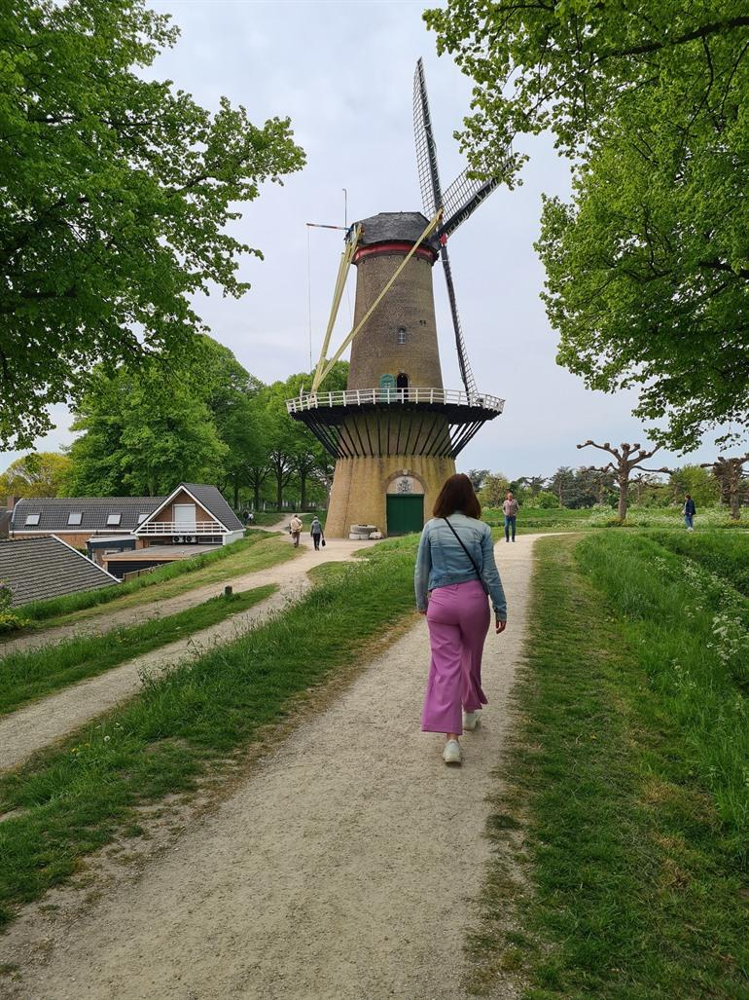
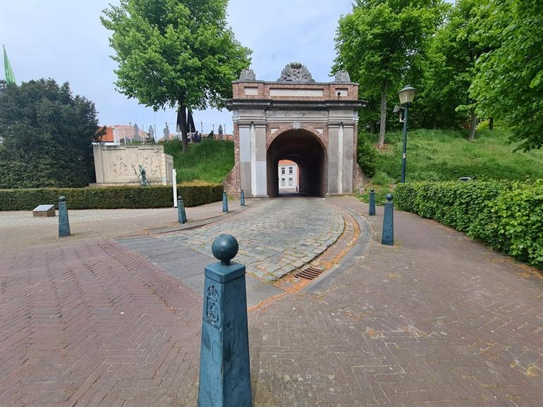

HULST
5 Toppers:
Gentpoort
Monument Reynaert de Vos
Stadsmolen
Museum Hulst
Sint-Willibrordusbasiliek
Quisque tincidunt tortor vitae nunc interdum, vel mollis ligula elementum. Nulla sollicitudin lectus ligula, in faucibus sapien egestas sit amet. Sed finibus, quam et hendrerit sagittis, mi dolor semper neque, scelerisque imperdiet ipsum quam quis leo. Suspendisse sapien leo, placerat sed gravida eu, pharetra tincidunt nibh. Phasellus scelerisque sem in urna scelerisque lobortis. Sed a nibh fermentum, tincidunt magna sed, cursus ante. Etiam gravida congue lectus id facilisis. Aliquam a gravida nibh. Donec cursus vel leo sit amet ornare. Quisque blandit dictum venenatis. Phasellus dapibus, nulla nec imperdiet semper, neque sem fermentum orci, sit amet ullamcorper sem purus sed justo. Integer et nisi ac sem viverra feugiat id quis leo.

Sed hendrerit nisl sed tortor eleifend, ut eleifend odio ultrices. In posuere malesuada fringilla. Cras blandit augue vel ornare venenatis. Nulla nisl nunc, lacinia nec viverra sed, tempor mattis justo. Sed facilisis dui at dui vehicula fermentum. Nullam non dolor nec leo mattis finibus ut in nulla. Vestibulum ante ipsum primis in faucibus orci luctus et ultrices posuere cubilia curae; Nunc condimentum ante lectus, nec pretium arcu lacinia ac. Donec sem justo, varius finibus varius a, vestibulum sit amet purus. In iaculis et ipsum sed faucibus. Mauris iaculis massa in orci interdum pharetra. Nunc suscipit nisi nec efficitur posuere. Cras lobortis eleifend eros, ac finibus diam lacinia eget.
